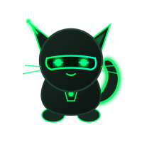

ZIRO
📞 LIVE
⏱️
✨
💬
⚙️
─
⚡ DIAGNÓSTICO DE CONVERSACIÓN NATURAL
STREAMING AR
1. Fin de voz (VAD):
-- ms
2. Transcripción STT:
-- ms
3. Procesamiento LLM:
-- ms
4. 1er Frag. Texto:
-- ms
5. Síntesis TTS (1°):
-- ms
6. 1er Sonido Reprod.:
-- ms
7. Tiempo Total Resp.:
-- ms
ZIRO
IA ACTIVA
🎙️
0%
Escuchando... Di tu comando
¡Hola! Soy tu mascota virtual. Háblame por micrófono o escríbeme. Pídeme "abrime youtube" o lo que necesites.
⛶
